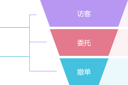

<h1 class="sales-title">销量总览</h1>
<div class="sales-items">
  <div class="sales-item">
    <div class="output-content">
      <button class="btn btn-small btn-fill output">导出</button>
    </div>
    <div class="sales-top">
      <span class="name sum">流量总览</span>
      <div class="ui-search">
        <label>
          <input class="txt begin-time1" type="text" placeholder="开始时间">
          <i></i>
        </label>
        <span class="pre">至</span>
        <label>
          <input class="txt end-time1" type="text" placeholder="截止时间">
          <i></i>
        </label>
        <span>
          <select class="diy-select" id="method_list1" name="">
            <option selected value="-1">请选择接入方式</option>
            <option value="1">手机</option>
            <option value="2">PC端</option>
          </select>
        </span>
      </div>
    </div>
    <div class="sum-content">
      <div class="sales-content">
        <div class="left">
          <div class="entrust-content mt-30"><span>委托转化率</span><b>90%</b></div>
          <div class="cancellation-content"><span>撤单转化率</span><b>10%</b></div>
        </div>
        <div class="left">
          
        </div>
        <div class="left" style="width:65%;">
          <div class="visitor-content row-v"><span>访客数</span><span class="num">100</span><b>90%</b></div>
          <div class="entrust-content row-e"><span>委托数</span><span class="num">100</span><b>90%</b><span>委托金额</span><span class="num">100000</span><b>7%</b></div>
          <div class="cancellation-content row-c"><span>撤单数</span><span class="num">100</span><b>10%</b><span>撤单金额</span><span class="num">100000</span><b>6%</b></div>
        </div>
      </div>
      <div class="interpretation-txt">
        <div class="fl">
          <p class="name">交易解读</p>
          <p class="info">了解详情？查看具体<a href="#">商品分析</a></p>
        </div>
        <div class="fr">
          <p class="name">交易解读</p>
          <p class="info">了解详情？查看具体<a href="#">商品分析</a></p>
        </div>
      </div>
    </div>
  </div>
  <div class="sales-item">
    <div class="output-content">
      <button class="btn btn-small btn-fill output">导出</button>
    </div>
    <div class="sales-top">
      <span class="name trend">流量趋势</span>
      <div class="ui-search">
        <label>
          <input class="txt begin-time2" type="text" placeholder="开始时间">
          <i></i>
        </label>
        <span class="pre">至</span>
        <label>
          <input class="txt end-time2" type="text" placeholder="截止时间">
          <i></i>
        </label>
        <span>
          <select class="diy-select" id="method_list2" name="">
            <option selected value="-1">请选择接入方式</option>
            <option value="1">手机</option>
            <option value="2">PC端</option>
          </select>
        </span>
      </div>
    </div>
    <div class="sales-chart" id="sales_line"></div>
  </div>
</div>
<script src="../../javascript/highcharts.js" type="text/javascript"></script>
<script type="text/javascript">
  $(function(){
    $('.diy-select').diySelect();
    $('.begin-time1').datepicker({
      onClose: function( selectedDate ) {
        $('.end-time1').datepicker( "option", "minDate", selectedDate );
        }
    });
    $('.end-time1').datepicker({
      onClose: function( selectedDate ) {
        $('.begin-time1').datepicker( "option", "maxDate", selectedDate );
      }
    });
    $('.begin-time2').datepicker({
      onClose: function( selectedDate ) {
        $('.end-time2').datepicker( "option", "minDate", selectedDate );
        }
    });
    $('.end-time2').datepicker({
      onClose: function( selectedDate ) {
        $('.begin-time2').datepicker( "option", "maxDate", selectedDate );
      }
    });
    $('#sales_line').highcharts({
      chart: {
        backgroundColor: '#fff',
        type: 'line',
        marginTop: 30
      },
      title: {
        text: ''
      },
      xAxis: {
       labels: {
        style: {
          fontSize: 12,
          color: '#c0c5ce'
        }
      },
      categories: ['2015/1/1', '2015/1/2', '2015/1/3', '2015/1/4', '2015/1/5', '2015/1/6','2015/1/7']
      },
      yAxis: {
        min: 0,
        title: {
          text: null
        },
        gridLineColor: '#dedede',
        gridLineWidth: 1,
        lineWidth: 1,
        plotLines: [{
          value: 0,
          width: 1,
          color: '#808080'
        }]
      },
      tooltip: {
        headerFormat: '<span style="font-size:10px">{point.key}</span><table>',
        pointFormat: '<tr><td style="color:{series.color};padding:0">{series.name}: </td>' +
        '<td style="padding:0"><b>{point.y} 人</b></td></tr>',
        footerFormat: '</table>',
        shared: true,
        useHTML: true
      },
      series: [{
        name: '访客数',
        color: '#b897f3',
        data: [1000, 200, 3000, 3002, 2800, 600, 800]
        }, {
        name: '委托数',
        color: '#e4788c',
        data: [800, 900, 500, 1002, 800, 900, 400]
        }, {
        name: '撤单书',
        color: '#44c1de',
        data: [500, 240, 1000, 2002, 1800, 200, 500]
      }]
    });
  });
</script>
